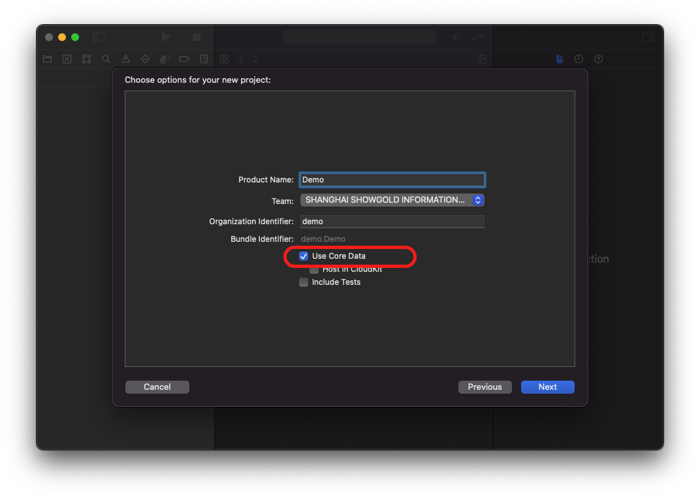
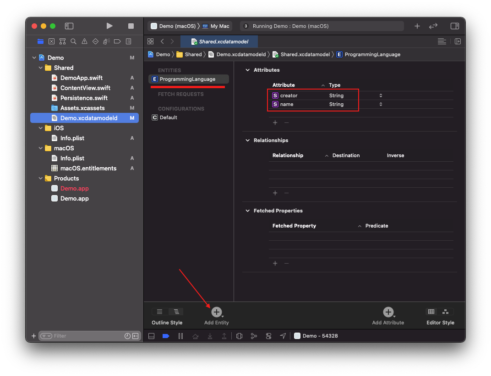

![SwiftUI Example logo]() SwiftUI Example
SwiftUI Example
SwiftUI Example
SwiftUI Example
SwiftUI Example
SwiftUI Example
SwiftUI 一起使用？如果您创建一个新项目并同时检查 SwiftUI 和 Core Data，则 Xcode 可以很好地帮助您实现有效的配置。具体来说，它：
YourProjectName.xcdatamodeld 模型文件。Persistence.swift 文件，该文件将 Core Data 整齐地包装在一个位置。managedObjectContext 键将上下文注入到初始内容视图的环境中。ContentView 中提供示例代码以创建，读取和删除示例数据。这为我们提供了在 SwiftUI 中使用核心数据提取请求的完整功能。
但是，如果您不使用 Core Data 模板，或者只是好奇 Core Data 模板为我们做了什么，那么值得简要介绍一下在您的应用中设置支持所需的步骤。我还将为您提供一些示例数据，以便您可以尝试本书的后续章节。
第一步是通过按 Cmd + N 创建一个新文件，然后选择 Core Data 来创建核心数据模型。该模型的名称很重要，因为它将很快在您的代码中使用。除非您打算使用复杂的 Core Data 配置，否则为模型 Main 命名是很好的 - 这就是我将在此处使用的名称。建立模型后，就可以继续创建要在应用程序中使用的任何实体。

出于示例目的，我们需要一些一致的数据来使用，以便我为您提供有意义的代码。因此，打开 xcdatamodeld 文件并创建一个名为 ProgrammingLanguage 的实体，该实体具有两个字符串属性：name 和 creator。显然，您并不需要完全具有这个实体和属性集合，因此在您进行操作时，只要在头脑上用自己的 Core Data 设置替换我的示例即可。

其次，您需要在某个地方加载和管理核心数据配置。 Apple 的模板使用 Persistence 单例来完成此任务，这是一个不错的解决方案，因为它足以使 Core Data 启动并运行，同时还提供了为 SwiftUI 制作预览上下文的功能。
因此，创建一个名为 Persistence.swift 的新文件，并提供以下代码：
struct Persistence {
// 一个单例供我们的整个应用程序使用
static let shared = Persistence()
// 存储核心数据
let container: NSPersistentContainer
// SwiftUI预览的测试配置
static var preview: Persistence = {
let controller = Persistence(inMemory: true)
// 创建10种示例编程语言。
for _ in 0..<10 {
let language = ProgrammingLanguage(context: controller.container.viewContext)
language.name = "Example Language 1"
language.creator = "A. Programmer"
}
return controller
}()
// 用于加载 Core Data 的初始化程序，可以选择使用内存中的存储区。
init(inMemory: Bool = false) {
// 如果您没有为模型 Main 命名，则需要在下面更改此名称。
container = NSPersistentContainer(name: "Main")
if inMemory {
container.persistentStoreDescriptions.first?.url = URL(fileURLWithPath: "/dev/null")
}
container.loadPersistentStores { description, error in
if let error = error {
// 用代码替换此实现，以适当地处理错误。
// fatalError() 使应用程序生成崩溃日志并终止。 尽管此功能在开发过程中可能很有用，但您不应在运输应用程序中使用此功能。
/*
出现错误的典型原因包括：
* 父目录不存在，无法创建或不允许写入。
* 由于设备被锁定时的权限或数据保护，无法访问持久性存储。
* 设备空间不足。
* 无法将 store could 迁移到当前模型版本。
检查错误消息，以确定实际的问题是什么。
*/
fatalError("Error: \(error.localizedDescription)")
}
}
}
}
该代码的内存中存储部分很重要，因为当您配置 Core Data 将信息保存到内存而不是磁盘中时，这意味着您所做的所有更改都将在程序结束时被丢弃。
第三，在您的 Persistence 类中添加一个 save() 方法，以便它检查上下文是否已更改，并在需要时提交更改。
func save() {
let context = container.viewContext
if context.hasChanges {
do {
try context.save()
} catch {
let nsError = error as NSError
fatalError("Unresolved error \(nsError), \(nsError.userInfo)")
// Show some error here
}
}
}
第四，您需要将 Core Data 容器的托管对象上下文注入 SwiftUI 环境。
这需要两个较小的步骤，都在 YourProjectNameApp.swift 文件中。 首先，为您的应用程序 struct 提供一个属性来存储持久性控制器：
let Persistence = Persistence.shared
然后使用 environment() 修饰符将新的 Core Data 视图上下文附加到环境中的 managedObjectContext 键：
ContentView()
.environment(\.managedObjectContext, Persistence.container.viewContext)
最后一步是可选的，但建议这样做：当您的应用程序移至后台时，您应该调用我们刚才编写的 save() 方法，以便 Core Data 永久保存您的更改。
在 SwiftUI 中，这是通过向我们的应用程序结构添加属性来监视场景阶段来完成的：
@Environment(\.scenePhase) var scenePhase
然后，您可以监视该更改，并每次都调用 save()：
import SwiftUI
@main
struct DemoApp: App {
let persistenceController = Persistence.shared
var body: some Scene {
WindowGroup {
ContentView()
.environment(\.managedObjectContext, persistenceController.container.viewContext)
}
// .onChange(of: scenePhase) { _ in
// persistenceController.save()
// }
}
}
在 ContentView 中提供示例代码以创建，读取并通过按钮添加一条数据
import SwiftUI
import CoreData
struct ContentView: View {
@Environment(\.managedObjectContext) private var viewContext
@FetchRequest(
sortDescriptors: [NSSortDescriptor(keyPath: \ProgrammingLanguage.name, ascending: true)],
animation: .default)
private var items: FetchedResults<ProgrammingLanguage>
var body: some View {
NavigationView {
List {
ForEach(items) { item in
if (item.name != nil) {
Text("Item at \(item.name!)")
}
}
}
.toolbar {
Button(action: addItem) {
Label("Add Item", systemImage: "plus")
}
}
}
}
private func addItem() {
let language = ProgrammingLanguage(context: viewContext)
language.name = "Example Language 1"
language.creator = "A. Programmer"
do {
try viewContext.save()
} catch {
let nsError = error as NSError
fatalError("Unresolved error \(nsError), \(nsError.userInfo)")
}
}
}
struct ContentView_Previews: PreviewProvider {
static var previews: some View {
ContentView().environment(\.managedObjectContext, Persistence.preview.container.viewContext)
}
}
完毕！
重要提示：这些说明很重要！
为避免混淆，我想重复一下，以上说明对于为 SwiftUI 设置有用的 Core Data 环境非常重要。 随后的所有 Core Data 章节均假定您已遵循上述说明。